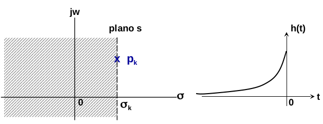

Transformada de Laplace#
Tópicos que serão abordados#
- a transformada de Laplace;#
- região de convergência;#
- propriedades;#
- inversão da transformada;#
- aplicações.#
Transformada de Laplace: Introdução#
- É utilizada na análise e caracterização de sistemas lineares invariantes no tempo:#
- Determinação da função de transferência ou da função do sistema;#
- Análise de estabilidade, causalidade, etc.#
Sistema Linear e Invariante no Tempo#
\(x(t) \to \fbox{h(t)} \to y(t) = h(t)*x(t) = \int_{-\infty}^{\infty} h(\tau)x(t-\tau)d\tau \)#
fazendo \(x(t) = e^{st}\)#
\(y(t) = \int_{-\infty}^{\infty} h(\tau)e^{s(t-\tau)}d\tau = \underbrace{e^{st}}_{auto-função}\underbrace{\int_{-\infty}^{\infty} h(\tau)e^{-s\tau}d\tau}_{auto-valor}\)#
Todas as famílias de funções na forma \(e^{st}\) se comportam como auto-funções para sistemas LIT.#
A transformada de Laplace#
- Definição:#
- Forma de representação:#
Condição de existência da TL \(\to\) Região de Convergência ROC#
Lugar geométrico do plano complexo (S) onde a TL converge#
- A transformada de Laplace se aplica a sinais mais gerais#
- consequentemente uma condição para a convergência é que:#
\( \int_{-\infty}^{\infty}|x(t)e^{-st}|dt < \infty \to \int_{-\infty}^{\infty}|x(t)e^{-(\sigma+j\omega)t}|dt\)#
\( \int_{-\infty}^{\infty}|x(t)e^{-(\sigma+j\omega)t}|dt = \int_{-\infty}^{\infty}|x(t)e^{-\sigma t}| \underbrace{|e^{-j\omega t}|}_{1}dt < \infty \)#
As ROC são dependentes apenas de \(\sigma\) e, dessa forma, são semi-planos paralelos ao eixo-y#
Plano s:
A transformada de Laplace Unilateral#
- Definição: \(X(s) = \int_{0^-}^{\infty}x(t)e^{-st}dt \)#
Diferenciação \(\frac{d}{dt}x(t) = sX(s) - x(0^-)\)#
Integração \(\int_{-\infty}^{t}x(\tau)d\tau = \frac{1}{s}X(s) - \frac{1}{s}\int_{-\infty}^{0^-}x(\tau)d\tau\)#
A transformada de Laplace unilateral ignora \(x(t)\) para \(t < 0\). Como \(x(t)\) é um sinal lateral direito, a ROC de \(X(s)\) é sempre da forma \(Re(s) > σ_{max}\) ou seja, o semi-plano lateral direito de \(s\).
Exercícios#
1- \(e^{-at}u(t) \stackrel{\mathcal{L}} \rightarrow \frac{1}{s+a}, \ \ \ \sigma > -a \)#
2- \(-e^{-at}u(-t) \stackrel{\mathcal{L}} \rightarrow \frac{1}{s+a}, \ \ \ \sigma < -a \)#
3- \( e^{-t}u(t) + e^{-3t}u(t) \stackrel{\mathcal{L}} \rightarrow \frac{1}{s+1} + \frac{1}{s+3}, \ \ \ \sigma > -1 \)#
Exercício 1#
\(X(s) = \int_{-\infty}^{\infty} x(t)e^{-st}dt = \int_{0}^{\infty} e^{-at}e^{-st}dt\)#
\(X(s) = \int_{0}^{\infty} e^{-(a+s)t}dt = -\frac{1}{s+a}e^{-(s+a)t}\Big |_{0}^{\infty} \)#
\(X(s) = \lim_{t \to \infty} -\frac{1}{s+a}e^{-(s+a)t} - [-\frac{1}{s+a}e^{-(s+a)0}]\)#
Quando o limite converge? \(\Re\{{s+a}\}>0 \to \sigma > -a\)#
Resposta \(X(s) = \frac{1}{s+a}, \sigma > -a\)#
Exercícios#
4- \(e^{-3t}u(t) -e^{-t}u(-t) \stackrel{\mathcal{L}} \to \frac{1}{s+3}+ \frac{1}{s+1}, -3<\sigma<-1\)#
5- \(e^{-t}u(t) - e^{-3t}u(-t) \stackrel{\mathcal{L}} \to ROC: \sigma<-3 \text{ e } \sigma>-1 \) Não existe solução#
Observações#
Para o exemplo 3#
$\(e^{-t}u(t) + e^{-3t}u(t) \stackrel{\mathcal{L}} \rightarrow \frac{1}{s+1} + \frac{1}{s+3}, \sigma > -1 \)$#
$\(X(s) = \frac{2(s+2)}{(s+1)(s+3)}, \sigma > -1 \)$#
O diagrama de pólos e zeros no plano s será:
Observações#
- nos três exemplos X(s) é uma razão de polinômios:#
$\( X(s) = \frac{N(s)}{D(s)} \rightarrow \frac{\text{raízes = zeros}}{\text{raízes = polos}} \)$#
- Se \(x(t)\) for uma combinação de exponenciais complexas então \(X(s)\) será uma função racional.#
- Sistemas lineares descritos por equações diferenciais lineares com coeficientes constantes apresentam transformada racional.#
- As raízes do numerador e denominador descrevem o sistema.#
- Os pólos estão relacionados com a região de convergência.#
Propriedades da região de convergência (RDC)#
Para que a transformada de Laplace convirja:
\(\int_{-\infty}^{\infty}|x(t)e^{-st}|dt < \infty\), em que \(\sigma = \Re\{s\}\)
O conjunto de valores de \(\sigma\) define a RDC:
1- A RDC consiste de faixas paralelas ao eixo jw.
2- Para sinais de duração finita a RDC é todo o plano s.
3- A RDC não contém pólos.
4- Sinal lateral direito \((x(t)u(t))\) a RDC então a RDC é da forma: \(\sigma > \sigma_0\)
5- Sinal lateral esquerdo \((x(t)u(-t)\) a RDC então a RDC é da forma: \(\sigma < \sigma_1\)
6- Sinal bilateral (\(x(t) \neq 0, -\infty < t < \infty\) ) a RDC então a RDC é da forma: \(\sigma_0 < \sigma < \sigma_1\)
Propriedades da transformada de Laplace#
Linearidade:#
RDC = \(R_1 \cap R_2\)
Deslocamento no tempo:#
RDC = R \(\rightarrow\) A própria RDC de \(X(s)\)
Propriedades da transformada de Laplace#
Deslocamento em S#
Compressão / Expansão#
Convolução#
Diferenciação no domínio do tempo#
Com condições inicias nulas:
Propriedades da transformada de Laplace#
Integração no domínio do tempo#
Diferenciação em Laplace#
Com condições iniciais nulas:
Teoremas do valor inicial e do valor final#
x(t) é um sinal causal sem impulsos ou singularidades na origem.
Transforma Laplace Unilateral#
Transformada Bilateral: \(X(s) = \int_{-\infty}^{\infty} x(t)e^{-st}dt\)#
Transformada Unilateral: \(X(s) = \int_{0}^{\infty} x(t)e^{-st}dt\)#
A transformada unilateral vai incorporar todo o comportamento do sistema de \(-\infty\) até \(^-0\) na forma de condições iniciais em \(t=0\).#
Transformada de Laplace inversa#
A transformada de Laplace inversa é calculada pela seguinte equação:
A equação acima envolve integral de contorno em uma linha reta paralela ao eixo \(j\omega\).
Caso das transformadas cuja forma é uma razão de dois polinômios.#
Em que \(M < N\) e \(a_N\) = 1
Transformada de Laplace inversa#
Calculando os pólos [\(p_k\)] de X(s) podemos escrever que:#
Expansão em frações parciais#
Se os polos forem distintos uns dos outros então:
em que: \(A_k = \left\{(s-p_k)X(s)\right\}_{s=p_k}\) \(\ \ k=1, \dots, N\) Justificativa Teorema dos Resíduos
Transformada de Laplace inversa#
Expansão em frações parciais#
se ocorrer um pólo \(p\), com multiplicidade \(r\), então são incluídos na expansão \(r\) termos do tipo:
em que:
Pares de transformadas de Laplace importantes:#
Análise de sistemas lineares utilizando a transformada de Laplace#
Em um sistema LTI os sinais de entrada e saída estão relacionados pela integral de convolução:
onde:
\(y(t)\) é a saída do sistema
\(h(t)\) é a resposta ao impulso
\(x(t)\) é a entrada
Pela propriedade da convolução:
\( Y(s) = H(s).X(s)\)
Sistemas descritos por equações diferenciais lineares#
Para um sistema LIT, descrito por equação diferencial com coeficientes constantes, tem-se que:
aplicando a transformada de Laplace em ambos os lados da equação acima tem-se:
Sistemas descritos por equações diferenciais lineares#
Pelas propriedades da linearidade e diferenciação no tempo:
portanto a função de transferência será:
H(s) é uma função racional de s
polinômios no numerador e denominador
Os coeficientes são os mesmos da equação diferencial.
Sistemas descritos por equações diferenciais lineares#
Zeros \(c_k\) de H(s) são as raízes do numerador:
Polos \(p_k\) de H(s) são as raízes do denominador:
A RDC e propriedades de estabilidade podem ser determinadas através da localização dos pólos de H(s) pois:
Causalidade e estabilidade de sistemas LTI#
sabemos que a resposta ao impulso fornece informações sobre a estabilidade e causalidade dos sistemas.
para um sistema LTI causal, h(t) é nula para \(t < 0\).
\( h(t) = 0, t<0\) então a ROC deve incluir \(+\infty\) ou estar a direita do polo com maior parte Real.
para um sistema LTI estável, \(h(t)\) é absolutamente integrável.
\( \int_{-\infty}^{\infty}|h(t)|dt \ < \infty \)
\( \int_{-\infty}^{\infty}|h(t)||e^{j\omega t}|dt \ < \infty \) ou seja, a reta \(j\omega\) deve estar na ROC da TLaplace
portanto, para um sistema LTI estável:
ROC inclui a reta \(j\omega\) pois \(h(t)\) é absolutamente integrável
estar a direita do polo com maior parte Real.
Sistemas estáveis#
Seja \(s=p_k\) um polo de \(H(s)\):
este pólo contribui, no domínio do tempo, com um termo exponencial.
A exponencial é decrescente e absolutamente integrável se:
Sistemas estáveis#
Ou a exponencial é decrescente e absolutamente integrável se:

Sistemas Causais e estáveis#
Os pólos de H(s) devem estar localizados no semi-plano esquerdo do plano s, e a Região de Convergência deve incluir o eixo imaginário jw.